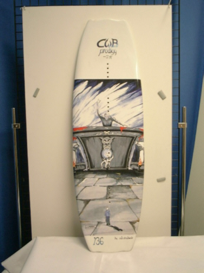

Scorpio 138
193,75 €
Das Scorpio wurde entwickelt um neuen Fahrern die
Grundlagen des Wakeboardens beizubringen. Aber
auch einer Familie bietet das Board jede menge Spaß.
Der continous rocker hilft um einen konstanten Pop
von der Welle zu bekommen. Die Flow Base ist ein
neues Material, dass nicht nur besser gleitet, es ist
auch viel widerstandsfähiger als andere Materialien
auf dem Markt. Das weiche und fehlerverzeihende
Fahrverhalten sorgt für sehr viel Spaß. Der "one size
fits all" Shape bringt leichte Kontrolle und zusätzliche
tabilität auf dem Wasser.
Zurück zur Angebotsseite